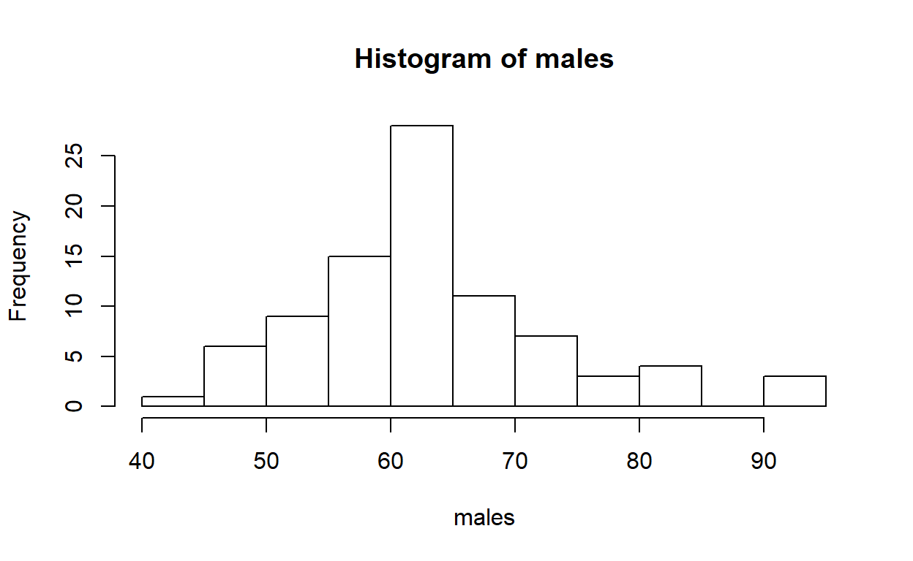

Histograms: Revision
Data examination
We start today where we finished last week
To look at the structure of the data we have read into R you can use the str command
library(SCIE1104)
data("wingspanMALES")
str(wingspanMALES)## 'data.frame': 87 obs. of 2 variables:
## $ X : int 1 2 3 4 5 6 7 8 9 10 ...
## $ males: num 54.8 63.1 63.4 68.9 62.1 ...Modify the following code to limit the number of rows printed to 5:
wingspanMALESTo get a brief summary of the key data attributes, use the summary function.
summary(wingspanMALES) ## X males
## Min. : 1.0 Min. :41.46
## 1st Qu.:22.5 1st Qu.:57.15
## Median :44.0 Median :62.15
## Mean :44.0 Mean :63.40
## 3rd Qu.:65.5 3rd Qu.:67.53
## Max. :87.0 Max. :92.36Creating a histogram
Recall that the formula for a basic histogram was
with(wingspanMALES, hist(males))
We saw last week that we could make edits to the basic plot:
with(wingspanMALES, hist(males,
breaks = "Sturges", # define the break points
xlim = c(0,100), # set the x-axis range
ylim = c(0,35), # set the y-axis range
col = "lightgrey", # fill the columns
border = "magenta", # column border
main ="Male wingspan histogram", # figure title
xlab = "Wingspan (cm)", # x-axis label
ylab ="Frequency of observation", # y-axis label
cex.lab = 0.8, # controls size of labels
cex.axis =1.2, # controls size of axis numbers
cex.main =1.5)) # controls size of title We will always be OK relying on one of the default histogram formulas for creating the histogram bin sizes when the data sample is smallish the three defaul options for breaks Sturges,Scott and FD will all give the same result.
We can also create a sequence for the breaks where we specify i. a start value ii. an end value iii. a value for the gap between each values
we create a sequence as follows:
seq(from = 2, to = 11, by =1.5)## [1] 2.0 3.5 5.0 6.5 8.0 9.5 11.0Do the values printed in the console make sense to you?
For the wingspan data a sensible sequence may be as follows:
seq(from = 25, to = 110, by =5)## [1] 25 30 35 40 45 50 55 60 65 70 75 80 85 90 95 100 105
## [18] 110So, if we use the ‘seq’ function for the breaks, we are in effect adding a list of break points.

If we think the sequence and x-axis are too long, then we can edit these to make them shorter
Histograms: Reinforcement exercise
Carry out the following edits to the code below:
- edit the sequence so that it runs from 35 to 100 by 5
- change the y-axis label so that it reads “Bird count” rather than “Frequency of observation”
with(wingspanMALES, hist(males,
breaks = seq(from = 25, to = 110, by =5),
xlim = c(20,100),
col = "lightgrey",
border = "black",
main ="Male wingspan histogram",
xlab = "Wingspan (cm)",
ylab ="Frequency of observation"))Histograms: Mine data exercise
The mine sample data is the same data set that was used in the lectures
Now examine the dataset ‘mine.sample’ in a similar way to the previous exercise, i.e. look at the way the data has been read in and the structure of the data set.
mine.sampleWe obtain a basic histogram as follows
with(mine.sample, hist(measurement, breaks ='sturges')) # this is the defaultNow edit the basic histogram so that:
- breaks is equal to ‘fd’ to give smaller bin widths
- the figure colour is lightgrey (ie the column fill colour is grey)
- the border for the columns is darkgrey
- the x-axis label reads “Depth to coal (m)”
- the y-axis label reads “Frequency of observation”
- the figure title is “Coal mine overburden example”
with(mine.sample, hist(measurement, breaks ='sturges')) # this is the default
… so that was our warm up exercise; we’re warm now!
Boxplots: Introduction
Exercise 2. Creating a box plot
The dataset ‘Birds’ contains information on the number of birds spotted on two different farms each day for 37 days.
First, make sure you have the file saved in your working directory
Next, we load the data which is saved within the current package and inspect the data:
data(Birds , package = "SCIE1104")
str(Birds)## 'data.frame': 37 obs. of 2 variables:
## $ Farm.A: int 17 19 16 20 22 17 26 25 17 13 ...
## $ Farm.B: int 77 84 78 69 79 79 78 88 77 73 ...We have data on Farm A and Farm B, and there are 37 observations for each farm.
head(Birds)IMPORTANT – note that there are two columns of data the data will not always be ordered this way.
The 5-number summary for the data (plus the mean value) can be obtained using
summary(Birds)## Farm.A Farm.B
## Min. :13.00 Min. :66.00
## 1st Qu.:17.00 1st Qu.:75.00
## Median :20.00 Median :81.00
## Mean :20.03 Mean :79.73
## 3rd Qu.:22.00 3rd Qu.:84.00
## Max. :26.00 Max. :92.00This information tells us that the average number of birds sighted on Farm B is greater than the average number of birds sighted on Farm A. Wewe can also see that the spread of observations at Farm B is much greater than observed at Farm A.
The box-plot is a visual representation of the 5-number summary.
The box plots the area of the interquartile range (2nd Qu. and 3rd Qu.). The solid line in the middle of the box shows the median. The lines to the outer edges of the plot show the max and min value.
Note if an observation is far away from the other observations it will be identified as an outlier and will be displayed as a dot.
We generate the default boxplot as:
boxplot(Birds)If we don’t like the default labels we can change them as:
boxplot(Birds, names = c("Little Farm", "Big Farm"))We can then add some other features to out boxplot
boxplot(Birds, names = c("Little Farm", "Big Farm"),
col = "grey",
main ="Bird sightings",
xlab = "Farms",
ylab ="No. bird sightings per day",
boxwex=0.8)Boxplots: Reinforcement activity
Edit the code below and:
- Change the title to read “Bird sightings grape growing regions”
- Change the x label to read “Farms in Western Australia”
- With only two groups the box size can be a little too big we can change this with
boxwex. the default value is 0.8 changing this value to 0.6 will help make the plot look better.
boxplot(Birds, names = c("Little Farm", "Big Farm"),
col = "grey",
main ="Bird sightings",
xlab = "Farms",
ylab ="No. bird sightings per day",
boxwex=0.8)
Additional features you can control
You can change the font sizes for the
- title
- axis values, and
- axis labels
using the cex option.
Generally you will be OK to just rely on the defaults for your own plots, but to see how these options work run the below example and note what happens
boxplot(Birds, names = c("Little Farm", "Big Farm"),
col = "grey",
main ="Bird sightings grape growing regions",
xlab = "Farms in Western Australia",
ylab ="No. bird sightings per day",
boxwex = 0.6,
cex.main=2,
cex.lab=1.5,
cex.axis=0.5)We can make the plot horizontal using:
boxplot(Birds, names = c("Little Farm", "Big Farm"),
horizontal = TRUE,
col = "grey",
main = "Bird sightings grape growing regions",
xlab = "Farms in Western Australia",
ylab = "No. bird sightings per day",
boxwex = 0.6)Look carefully at the plot. Are the axis labels in the right place? Now
- edit the script so that the axis labels are in the right place
- use the copy to clipboard option to play around with the overall shape of the image, it will look better if the image is relatively long and not too tall. If you are unsure ask a tutor for help.
- Copy the image to a Word file, and format the caption such that it matches the SCIE1104 style format
Note that figure quality will be a part of the assessment guide for Assignment 1!
One of the most important things to get comfortable with is what to do when there are no tutors around to help. If you have time I recommend using the R help pages. For practice try consultingthe box plot help pages help(boxplot) and try and work out how to: add a ‘notch’ to each boxplot
Boxplots: Additional exercise
If you have time complete the following exercise
Load the Birds2 data file from the same package.
The file Birds2 contains information on the number of birds spotted on three different farms each day for 37 days.
The default names for each column are: “Farm.A” “Farm.B” “Farm.C”
Using the example script as an example:
- Change the names to: “Little Farm”, “Medium Farm”, “Big Farm”
- create a simple boxplot of the data
- create a boxplot of the data that includes
- a title
- x and y axis labels
- thinner box widths for the box part of the plot
- copy the figure to a word document.
#####################################################################
# #
# #
# (o> Like a bird on the wire #
# //\ Like a drunk in a midnight choir #
# ____V_/_____ I have tried in my way to be free... #
# || #
# || L. Cohen #
# #
#####################################################################